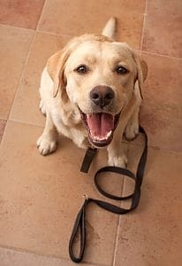
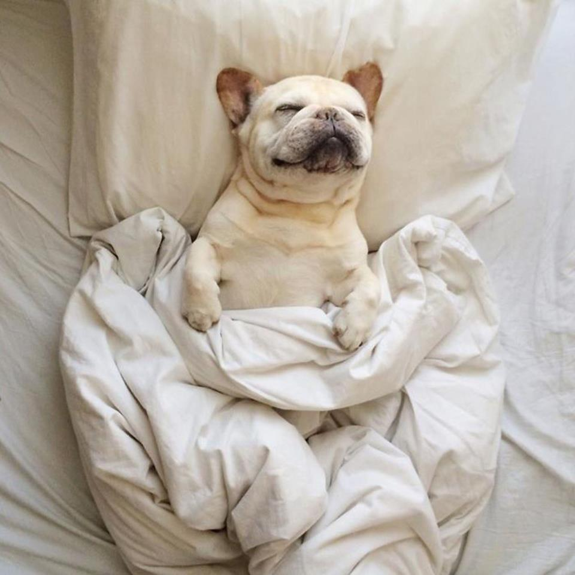
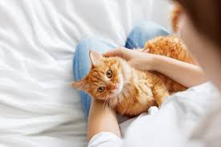

Going Somewhere? Call Ashley's Pet Care!
Services
Dog Walks

Daily dog walks are our specialty at 4 Pets’ Sake. Recommended for every dog, but a must for clients who work extra long hours, for older dogs who just can’t hold it like they used to, and active dogs with boundless energy. We will walk your dog individually for at least 20 minutes on leash in your neighborhood. We are also happy to play ball or Frisbee (in secure areas) with your dog, providing them with the exercise and attention that they enjoy most. Extended playtime/walk time available for an additional fee. $22/visit* with monthly discounts available at 10% off
Vacation Care

When you are on vacation, business travel or have emergency situations, leave your pet at home in the comfort of familiar surroundings. Your pet sitter will arrive at your home to feed, water, dispense medications, clean the litter box/cage, play with and pamper your pet. As a complimentary service, we also water indoor plants, bring in the mail, and rotate the lights/blinds to help deter burglary. $25/visit*
In Home Boarding

Your dog will be in the safety of a 4 Pets' Sake staff home. All dogs enjoy access to a secure yard for playtime, lots of dog beds to lie on, toys to play with and plenty of belly rubs administered throughout the day. Requirements include: must be housebroken, get along well with other dogs and are spayed/neutered. This is a great alternative to multiple visits to your home a day and is the perfect boarding solution for social dogs. $50/day
CatCation

Our cat-only boarding facility with spacious cat condominiums, soft bedding, relaxing music and open space playtime. A home away from home environment where your cat will feel safe, relaxed and purrfectly pampered. $25/day; $19/day for each additional cat.